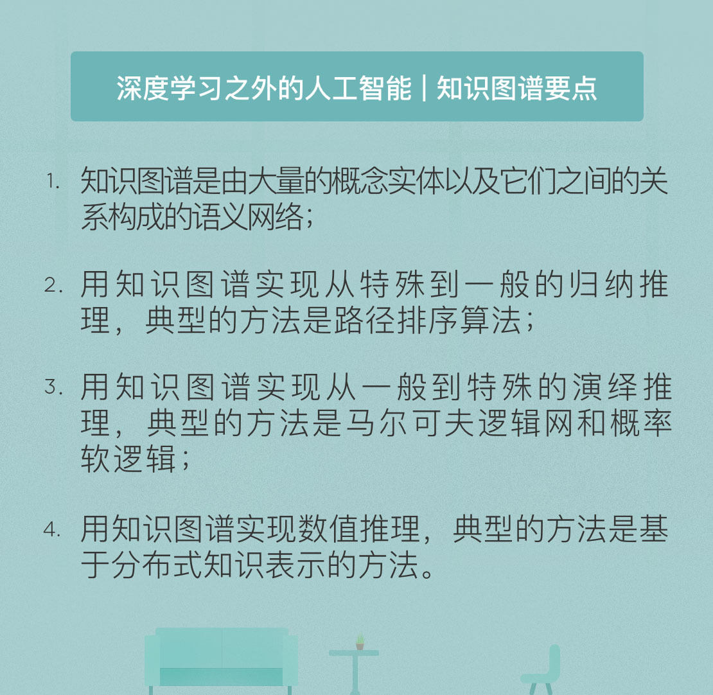

- 00 开篇词 人工智能：新时代的必修课.md
- 01 数学基础 九层之台，起于累土：线性代数.md
- 02 数学基础 月有阴晴圆缺，此事古难全：概率论.md
- 03 数学基础 窥一斑而知全豹：数理统计.md
- 04 数学基础 不畏浮云遮望眼：最优化方法.md
- 05 数学基础 万物皆数，信息亦然：信息论.md
- 06 数学基础 明日黄花迹难寻：形式逻辑.md
- 07 机器学习 数山有路，学海无涯：机器学习概论.md
- 08 机器学习 简约而不简单：线性回归.md
- 09 机器学习 大道至简：朴素贝叶斯方法.md
- 10 机器学习 衍化至繁：逻辑回归.md
- 11 机器学习 步步为营，有章可循：决策树.md
- 12 机器学习 穷则变，变则通：支持向量机.md
- 13 机器学习 三个臭皮匠，赛过诸葛亮：集成学习.md
- 14 机器学习 物以类聚，人以群分：聚类分析.md
- 15 机器学习 好钢用在刀刃上：降维学习.md
- 16 人工神经网络 道法自然，久藏玄冥：神经网络的生理学背景.md
- 17 人工神经网络 一个青年才俊的意外死亡：神经元与感知器.md
- 18 人工神经网络 左手信号，右手误差：多层感知器.md
- 19 人工神经网络 各人自扫门前雪：径向基函数神经网络.md
- 20 人工神经网络 看不见的手：自组织特征映射.md
- 21 人工神经网络 水无至清，人莫至察：模糊神经网络.md
- 22 深度学习 空山鸣响，静水流深：深度学习概述.md
- 23 深度学习 前方有路，未来可期：深度前馈网络.md
- 24 深度学习 小树不修不直溜：深度学习中的正则化.md
- 25 深度学习 玉不琢不成器：深度学习中的优化.md
- 26 深度学习 空竹里的秘密：自编码器.md
- 27 深度学习 困知勉行者勇：深度强化学习.md
- 28 深度学习框架下的神经网络 枯木逢春：深度信念网络.md
- 29 深度学习框架下的神经网络 见微知著：卷积神经网络.md
- 30 深度学习框架下的神经网络 昨日重现：循环神经网络.md
- 31 深度学习框架下的神经网络 左右互搏：生成式对抗网络.md
- 32 深度学习框架下的神经网络 三重门：长短期记忆网络.md
- 33 深度学习之外的人工智能 一图胜千言：概率图模型.md
- 34 深度学习之外的人工智能 乌合之众的逆袭：集群智能.md
- 35 深度学习之外的人工智能 授人以鱼不如授人以渔：迁移学习.md
- 36 深度学习之外的人工智能 滴水藏海：知识图谱.md
- 37 应用场景 你是我的眼：计算机视觉.md
- 38 应用场景 嘿, Siri：语音处理.md
- 39 应用场景 心有灵犀一点通：对话系统.md
- 40 应用场景 数字巴别塔：机器翻译.md
- 一键到达 人工神经网络复习课.md
- 一键到达 应用场景复习课.md
- 一键到达 数学基础复习课.md
- 一键到达 机器学习复习课.md
- 一键到达 深度学习之外的人工智能复习课.md
- 一键到达 深度学习复习课.md
- 一键到达 深度学习框架下的神经网络复习课.md
- 推荐阅读 我与人工智能的故事.md
- 新书 《裂变：秒懂人工智能的基础课》.md
- 直播回顾 机器学习必备的数学基础.md
- 第2季回归 这次我们来聊聊机器学习.md
- 结课 溯洄从之，道阻且长.md
- 课外谈 “人工智能基础课”之二三闲话.md
- （课外辅导）人工神经网络 拓展阅读参考书.md
- （课外辅导）数学基础 拓展阅读参考书.md
- （课外辅导）机器学习 拓展阅读参考书.md
- （课外辅导）深度学习 拓展阅读参考书.md
36 深度学习之外的人工智能 滴水藏海：知识图谱
近期，关于“深度学习是不是炼金术”的争议愈演愈烈。这些争议产生的原因在于深度学习的黑箱特性：虽然深度学习算法能够将图片中的猫咪辨识出来，却无法详细地解释为什么会做出这样的判断，其判定方法是否具备普适性也无从知晓。
因此，人工智能的一个重要研究方向就是开发具有更好的可解释性，更容易被人理解的人工智能模型。这样的模型将能够克服现有人工智能在概念认知和语言认知上的巨大障碍，它不但会辨认图片里有一只猫，还能指出它是依据猫特有的眼睛、耳朵和胡子这些特征做出的判断。
要构造可解释的人工智能，靠大数据去训练复杂模型肯定是不靠谱的，还是要回归到逻辑推演的路径上，而知识图谱很可能成为可解释人工智能中的一项关键技术。
知识图谱（knowledge graph）是由大量的概念实体以及它们之间的关系共同构成的语义网络。某种程度上，它类似于今天备受推崇的思维导图，但是具有更加规范的层次结构和更加强大的知识表示能力。
《福尔摩斯探案集》的作者亚瑟·柯南道尔有句名言：“一个逻辑学家，不需要亲眼见过或听过大西洋和尼亚加拉大瀑布，他从一滴水中就能推测出它们。”
知识图谱也是如此，它采集星罗棋布的碎片化信息和数据，然后按标准化的思考方式加以整理，再将各个看似不相关但背后有着共同联系的信息关联起来，挖掘出背后的规律。
为了构造知识的基本框架，知识图谱除了包含实体之外，一般还包括概念、属性、关系等一系列信息。人类的智能源于对知识内部表示的推理过程，这也是早期人工智能的大咖们热衷于符号主义的原因。因为人类的认知过程正是不断用概念、属性和关系去理解世界和解释世界的过程，而这些理解共同构成了人脑中高度组织化和结构化的知识图谱。
知识图谱中的概念、属性和关系可以用下面的一个例子来理解：当我们提到莱昂内尔·梅西的时候，即使不熟悉足球的人也很可能知道他是个足球运动员，这里的“足球运动员”就是概念；经常看球的人则会知道梅西来自阿根廷，效力在巴塞罗那俱乐部，这些都属于实体梅西的属性；更狂热的球迷还会知道内马尔是梅西的前队友，克里斯蒂亚诺·罗纳尔多是梅西的主要竞争对手，这就是实体梅西和其他实体之间的关系。
同数理逻辑一样，知识图谱也可以用于知识的推理。知识推理最广泛的应用就是知识库问答，也就是理解自然语言中的问题，并从知识库中寻找答案。但正所谓“生也有涯，知也无涯”，即使最庞大的百科全书也不可能将所有知识尽收囊中，这时就需要知识图谱大显身手了。知识图谱可以根据已有实体的概念、属性和关系为新的概念自动生成属性；也可以明确不同新实体之间的关系。
具体说来，知识推理可以分为归纳和演绎两类，分别表示了“从特殊到一般”和“从一般到特殊”的过程。
所谓归纳（induction）是指从某类事物的大量实例出发，推理出关于这类事物的一般性结论。如果在我认识的程序员朋友中，小张很聪明，老李很聪明，大刘也很聪明，那我就有理由相信，所有的程序员都很聪明。这就是归纳的过程。可以看出，归纳推理能够从旧知识中获取新知识，是知识的增殖过程。
将归纳的过程调转方向，得到的就是演绎。演绎（deduction）指的是从一般性的前提出发，推导出个别结论或者具体陈述的过程。既然我已经归纳出“所有的程序员都很聪明”的结论，那么当遇到一个陌生的程序员小赵时，即使对他一无所知，我也可以通过演绎得出“小赵很聪明”这个符合一般性原则的具体陈述。
如果你对数理逻辑的内容还有印象，那就不难发现，经典的三段论实际上就是一类演绎推理。虽然演绎推理可以用来解决复杂的问题，但它只是将已有事实揭示出来，而不能够产生新知识。
数理逻辑能够实现的推理建立在硬性约束的基础上，只能实现非黑即白的推理过程，相比之下，知识图谱则可以实现软性推理。
在归纳推理中，软性推理的一个应用是路径排序算法（path ranking algorithm）。
在知识图谱中，实体是由二元关系相连接的，因而现实世界中的规则在知识图谱中就体现为不同实体之间的关系路径。路径排序算法正是以实体之间的路径为依据，在不完全的知识库中学习目标关系的分类器。
路径排序算法的实现包括特征抽取、特征计算和分类器训练三个步骤。特征抽取的任务是生成路径特征的集合并加以筛选，筛选出的特征被应用在训练数据集上，对每个训练样本都计算出其对应的特征取值，最后根据训练样本为每个目标关系训练出一个分类器。将分类器应用在知识图谱上，就可以自动挖掘并筛选出可靠的规则。
软性推理也可以应用在演绎过程中，得到的就是马尔可夫逻辑网和概率软逻辑。
马尔可夫逻辑网（Markov logic network）是将无向概率图模型和一阶谓词逻辑相结合得到的统计关系学习模型。这个网络是一阶逻辑公式的集合，其中的每个逻辑规则都被分配一个实数作为权重系数，以此实现规则的软化。规则的权重越大，意味着它的约束力越强，当权重为正无穷时，软性规则就退化为硬性规则。
你可能知道小品里的包袱：“1加1在什么情况下等于3？在算错的情况下等于3！”这就是典型的以对错来区分的硬性规则。但在由软性规则构造出的马尔可夫逻辑网中，1加1等于3也是合法的，但这个合法规则只存在于另外的一个平行世界之中，这个世界和真实世界的差别很大，其存在的可能性很小，因而与它相关的规则成立的概率也会很低。
利用马尔可夫逻辑网对知识图谱建模后，就可以利用已有的规则和权重系数来推断未知事实成立的概率。如果规则和权重系数部分未知或者全部未知时，则可以自动学习规则和权重，这也就是马尔可夫随机场的结构学习。
如果对马尔可夫逻辑网加以扩展，给网络中每个顶点所代表的原子事实赋予一个连续分布的真值，得到的就是概率软逻辑（probabilistic soft logic）。概率软逻辑能够对不确定的事实和规则同时建模，因而具有更强的不确定性处理能力。连续真值的引入也有助于问题的优化，从而大大提升了推理效率。
归纳推理也好，演绎推理也罢，实现的都是符号推理，也就是在知识图谱中的实体和关系符号上直接进行推理。与符号推理对应的是数值推理。数值推理使用数值计算的方法来模拟推理过程，其典型的实现方案就是基于分布式表示的推理。
分布式知识表示（knowledge graph embedding）是将包含实体和关系的知识图谱组件嵌入到连续的向量空间中，以便在保持知识图谱内在结构的同时简化操作。
在分布式的表示中，首先要定义出实体和关系在向量空间中的表示形式，其次要定义打分函数来衡量每个实体-关系组成立的可能性，最后通过构造优化问题来学习实体和关系的低维向量表示。
在分布式知识表示的基础上，数值推理可以完成多类任务：利用打分函数计算所有备选答案的得分，可以实现知识图谱上的链接预测；根据某个实体元组的得分是否超过预先设定的阈值，可以对元组进行分类；计算不同实体的表示向量及其相似程度，则可以对实体进行解析……受篇幅所限，对具体推理任务的详细原理就不做介绍了。
今天我和你分享了知识图谱的基本原理与简单应用。其要点如下：
- 知识图谱是由大量的概念实体以及它们之间的关系构成的语义网络；
- 用知识图谱实现从特殊到一般的归纳推理，典型的方法是路径排序算法；
- 用知识图谱实现从一般到特殊的演绎推理，典型的方法是马尔可夫逻辑网和概率软逻辑；
- 用知识图谱实现数值推理，典型的方法是基于分布式知识表示的方法。
在数理逻辑中我曾提到，人工智能进行推理的一个关键问题是常识的缺失。那么知识图谱的出现是否能够给计算机注入常识呢？
欢迎发表你的观点。

© 2019 - 2023 Liangliang Lee. Powered by gin and hexo-theme-book.